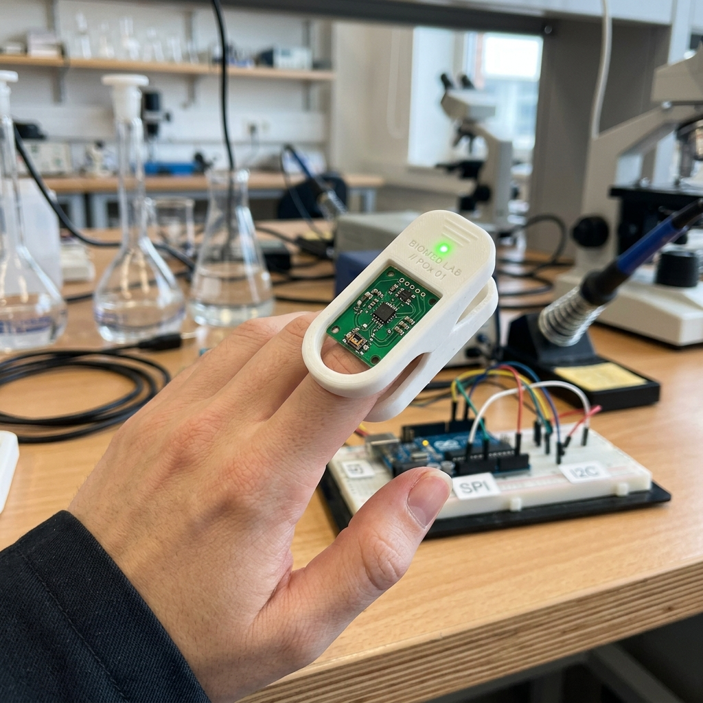

Welcome to my professional site
Cristina Pérez
Biomedical Engineer & Researcher
Transforming complex physiological data into actionable insights.
With a strong background in advanced signal processing, my research bridges cardiovascular health assessment (through ECG analysis) and the biomechanics of human locomotion.
Current Position
I am a Teaching and Research Staff member at the School of Architecture and Technology at Universidad San Jorge (USJ, Spain). I research within the UNLOC group, focusing on the limits of human locomotion from a biomechanical and physiological perspective. I also serve as a lecturer for the Bachelor’s Degree in Biomedical Engineering.
Core Expertise
Technical Skills
Experience
Academic Experience
Escuela de Arquitectura y Tecnología
Universidad San Jorge (Spain) | 09/2025 - Present
Delivered theoretical lectures and practical sessions for "Control Engineering", "Instrumentation Techniques" and "Biomedical Instrumentation", part of the Bachelor's Degree in Biomedical Engineering curriculum. All courses taught entirely in English. Furthermore, I provide teaching support for the course 'Fundamentals of Biomechanics' within the Master's Degree.
Área de Ingeniería, Tecnologías y Servicios de Telecomunicación
Universidad de Zaragoza (Spain) | 09/2020 - 12/2022
Delivered practical sessions for the courses “Signals and Systems” and “Application of Digital Signal Processing”, part of the second and fourth-year Bachelor's Degree in Telecommunications Engineering curriculum. Achieved outstanding teaching evaluations.
Research Experience
Unlimited Locomotion Group
Universidad San Jorge (Spain) | 09/2025 - Present
Development of research activities focused on the study of innovative ECG-derived markers extracted from exercise stress tests in endurance amateur athletes for early detection of cardiovascular maladaptation and sudden cardiac death prevention, while providing technological support for the processing and interpretation of biomechanical data.
Biomedical Signal Interpretation & Computational Simulation Group
Instituto Universitario de Investigación en Ingeniería de Aragón | 09/2020 - 02/2025
Development of my Ph.D. thesis, focused on studying ECG-derived markers, such as the QT interval adaptation time to gradual heart rate changes, as a marker of ventricular repolarization heterogeneities.
Industry Experience
R&D Intern
El Dulze (Murcia, Spain) | 07/2016 - 09/2016
Gained hands-on experience with the configuration and programming of FANUC industrial robots. Contributed to optimizing production by reprogramming robot codes, and collaborated in the implementation of Omron PLCs and artificial vision systems.
Biomedical Engineering Projects
A showcase of ongoing and completed projects in Biomedical Engineering, bridging the gap between research and practical applications.
3D-Printed Finger-Clip Housing for Pulse Oximeter
Status: Concept & Design Phase
Started: Spring 2026
Overview: The optical signal acquired by the DFRobot Fermion MAX30102 pulse oximetry sensor is highly sensitive to ambient light. This ongoing project aims to design and manufacture a custom 3D-printed housing to encapsulate the sensor, effectively isolating it from external light sources to improve signal quality.

Concept visualization
Education
Doctorate in Biomedical Engineering
Universidad de Zaragoza (Unizar)
09/2019 – 02/2025
Ph.D. thesis title: Quantification of QT Interval Adaptation Time to Gradual Changes in Heart Rate and its Use for Cardiac Risk Stratification.
Master’s degree in Biomedical Engineering
Universidad de Zaragoza (Unizar)
09/2017 – 02/2019
Master thesis title: Estimación de la respuesta fisiológica en entornos hiperbáricos mediante modelado computacional basado en redes neuronales artificiales.
Bachelor’s degree in Industrial Electronics and Automotive Engineering
Universidad Politécnica de Cartagena (UPCT)
09/2013 – 09/2017
Bachelor thesis title: Diseño y experimentación de una nueva pinza quirúrgica basada en materiales inteligentes (SMA) para cirugía de mínima invasión.
Publications & Impact
Publications
Publications
Honors
Ph.D. Thesis
Journal Publications
- C. Pérez, J. P. Martínez, J. Ramírez, T. Kenttä, J. Junttila, A. Kiviniemi, J. Perkiömäki, H. Huikuri, E. Pueyo and P. Laguna, “Sudden Cardiac Death Risk Prediction from QT–RR Adaptation Time Lag Computed from Exercise Stress Test ECG”, in IEEE Transactions on Biomedical Engineering, 2025.
- C. Pérez, E. Pueyo, J. P. Martínez, J. Viik, L. Sörnmo and P. Laguna, “Performance Evaluation of QT-RR Adaptation Time Lag Estimation in Exercise Stress Testing”, in IEEE Transactions on Biomedical Engineering, vol. 71, no. 11, pp. 3170-3180, 2024.
- L. Bachi, H. Halvaei, C. Pérez et al., “ECG Modeling for Simulation of Arrhythmias in Time-Varying Conditions”, in IEEE Transactions on Biomedical Engineering, vol. 70, no. 12, pp. 3449-3460, 2023.
- C. Pérez, E. Pueyo, J. P. Martínez, J. Viik and P. Laguna, “QT interval time lag in response to heart rate changes during stress test for coronary artery disease diagnosis”, Biomedical Signal Processing and Control, vol. 86, p. 105056, 2023.
- C. Pérez, R. Cebollada, K.A. Mountris, J.P. Martínez, P. Laguna, E. Pueyo, "The role of β-adrenergic stimulation in QT interval adaptation to heart rate during stress test” PLoS One, vol. 18, no 1, p. e0280901, 2023.
Conference Publications
- C. Pérez, E. Pueyo, J. P. Martínez, L. Sörnmo and P. Laguna, “QT-RR Adaptation Time Lag Estimation and its Dependence on Heart Rate Trend Frequency Content in Exercise Stress Testing”, ESGCO 2024.
- C. Pérez, E. Pueyo, J. P. Martínez, L. Sörnmo and P. Laguna, ”Estimadores del retardo entre las series de QT y RR en registros ECG de prueba de esfuerzo: evaluación en simulación", CASEIB 2023.
- C. Pérez, E. Pueyo, J. P. Martínez, L. Sörnmo and P. Laguna, “Evaluation of a QT Adaptation Time Estimator for ECG Exercise Stress Test in Controlled Simulation”, CinC 2023.
- S. Romagnoli, C. Pérez, L. Burattini, E. Pueyo, M. Morettini, A. Sbrollini, J.P. Martínez, P. Laguna, “Model-based Estimators of QT Series Time Delay in Following Heart-Rate Changes”, EMBC 2023.
- C. Pérez, E. Pueyo, J. P. Martínez, L. Sörnmo and P. Laguna, “Simulación de señales ECG incluyendo dinámica del intervalo PQ con el ritmo cardiaco y ruido muscular variante en el tiempo”, CASEIB 2022.
- R. Cebollada, C. Pérez, K. A. Mountris, J. P. Martínez, P. Laguna and E. Pueyo, “Mechanisms Underlying QT Interval Adaptation Behind Heart Rate During Stress Test”, CinC 2021.
- C. Pérez, A. Martín-Yebra, J. Viik, J. P. Martínez, E. Pueyo and P. Laguna, “Eigenvector-based spatial ECG filtering improves QT delineation in stress test recordings”, Asilomar 2021.
- Young Investigator Award for the best oral presentation. “Characterization of Impaired Ventricular Repolarization by Quantification of QT Delay after Heart Rate Changes in Stress Test”, 17th STAFF/MALT Symposium, 2021.
- C. Pérez, E. Pueyo, J. P. Martínez, J. Viik and P. Laguna, “Characterization of impaired repolarization by quantification of the QT delay in response to heart rate changes from stress test recordings”, ISCE 2021.
- C. Pérez, E. Pueyo, J. P. Martínez, J. Viik and P. Laguna, "Retardo entre QT y RR en registros de prueba de esfuerzo como indicador de la heterogeneidad de la repolarización ventricular", CASEIB 2020.
- C. Pérez, E. Pueyo, J. P. Martínez, J. Viik and P. Laguna, “Characterization of Impaired Ventricular Repolarization by Quantification of QT Delayed Response to Heart Rate Changes in Stress Test”, CinC 2020.
- C. Pérez, E. Pueyo, J. P. Martínez, J. Viik and P. Laguna, “Characterization of impaired repolarization by quantification of the QT delay in response to heart rate changes from stress test recordings”, ESGCO 2020.
Learning Journey
2026
- New Technologies for External Load Monitoring in Sports (HRLab-Madrid, España).
2025
- Intermediate Python Workshop (Planeta Formación y Universidades).
- Google AI Tools for Education (Planeta Formación y Universidades & Google).
- Physical Activity in Research (Barcelona Institute for Global Health, España)
- Introducción a la Ciencia de Datos Biomédicos y Machine Learning (Barcelona Institute for Global Health, España)
- Supervised Machine Learning: Regression and Classification (DeepLearning.AI & Universidad de Stanford - Coursera)
2023
- Big Data Analysis (Timisoara University, Rumanía)
- Annual School "the Bioengineering of Sport" (Gruppo Nazionale de Bioingegneria, Milán, Italia)
- Vida después del Doctorado (grupo organizador) (Instituto de Investigación en Ingeniería de Aragón, España)
2022
- Curso Introducción a la programación científica con Python (Universidad de Zaragoza, España)
2021
- Curso de Introducción a R (Universidad de Zaragoza, España)
- Curso Introducción a la Inteligencia Artificial (Universidad de Zaragoza, España)
2020
- Curso de Gestión de I+D+i en empresa (Universidad de Zaragoza, España)
- Curso Herramientas avanzadas de hojas de cálculo (Universidad de Zaragoza, España)
2019
- Programa INCOOVA: emprendimiento (Confederación Regional de Organizaciones empresariales de Murcia, España)
- Reparación de propuestas de investigación en tecnologías sanitarias (Universidad Politécnica de Cartagena, España)
2015 - 2017
- UPCT Racing Team: diseño y fabricación de un bólido eléctrico (Universidad Politécnica de Cartagena, España) [Years: 2015, 2016, 2017]